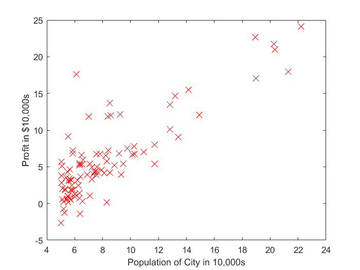
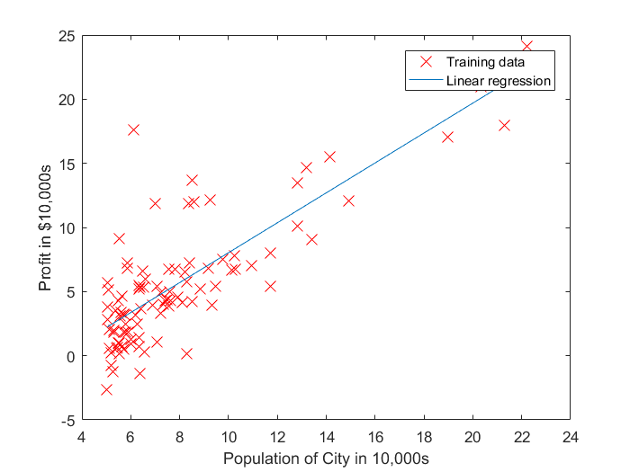
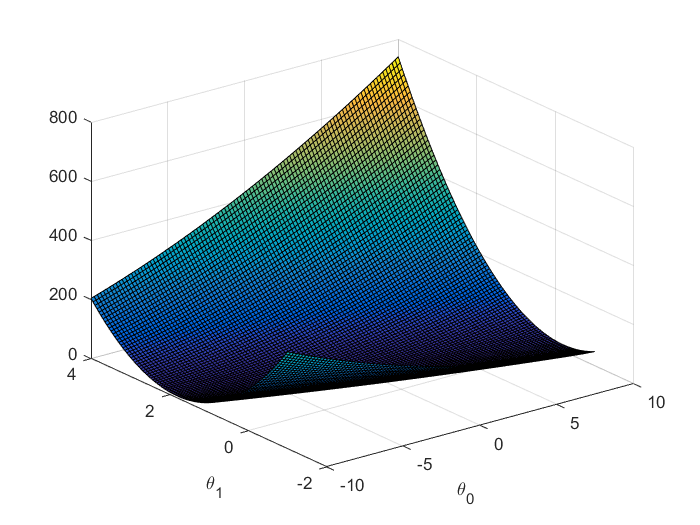
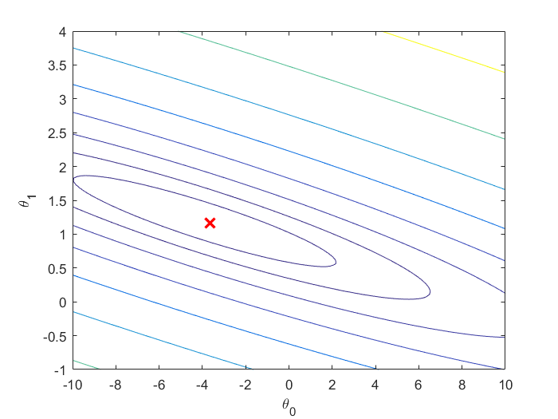
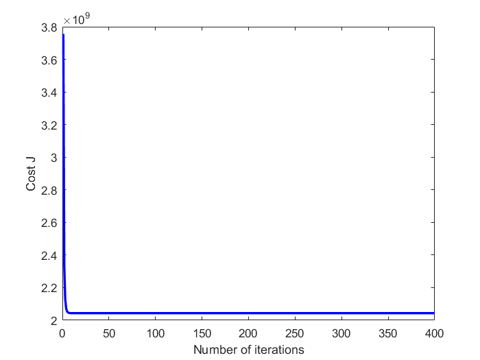

Machine Learning implemented in MATLAB - Notebook 1: Linear Regression
Author: Alberto Ibarrondo | Date: 20/03/2017 | License: MIT Free software
Contents
1 INTRODUCTION
The objective of this first notebook is to implement a Linear Regression model in MATLAB and apply it on a dataset.
Files included with this notebook
- MachLearnInMATLAB_1_LinearRegression.m - implementation MATLAB script
- data1.txt - Dataset for linear regression with one variable
- data2.txt - Dataset for linear regression with multiple variables
- computeCost.m - Function to compute the cost of linear regression
- gradientDescent.m - Function to run gradient descent
- featureNormalize.m - Function to normalize features
- normalEqn.m - Function to compute the normal equations
2 LINEAR REGRESSION WITH ONE VARIABLE
2.1: Loading & Plotting
x refers to the population size in 10,000s y refers to the profit in $10,000s
clear ; close all; clc fprintf('1. Loading and Plotting Data ...\n') data = load('data1.txt'); X = data(:, 1); y = data(:, 2); m = length(y); % number of training examples % Plot Data figure; % open a new figure window plot(X, y, 'rx', 'MarkerSize', 10); % Plot the data ylabel('Profit in $10,000s'); % Set the y axis label xlabel('Population of City in 10,000s'); % Set the x axis label
1. Loading and Plotting Data ...
2.2: Gradient Descent
fprintf('2. Running Gradient Descent ...\n') X = [ones(m, 1), data(:,1)]; % Add a column of ones to x theta = zeros(2, 1); % initialize fitting parameters % Some gradient descent settings iterations = 1500; alpha = 0.01; % compute and display initial cost computeCost(X, y, theta) % run gradient descent theta = gradientDescent(X, y, theta, alpha, iterations); % print theta to screen fprintf('Theta found by gradient descent: '); fprintf('%f %f \n', theta(1), theta(2)); % Plot the linear fit hold on; % keep previous plot visible plot(X(:,2), X*theta, '-') legend('Training data', 'Linear regression') hold off % don't overlay any more plots on this figure % Predict values for population sizes of 35,000 and 70,000 predict1 = [1, 3.5] *theta; fprintf('For population = 35,000, we predict a profit of %f\n',... predict1*10000); predict2 = [1, 7] * theta; fprintf('For population = 70,000, we predict a profit of %f\n',... predict2*10000);
2. Running Gradient Descent ... ans = 32.0727 Theta found by gradient descent: -3.630291 1.166362 For population = 35,000, we predict a profit of 4519.767868 For population = 70,000, we predict a profit of 45342.450129
2.3: Visualizing J(theta_0, theta_1)
fprintf('Visualizing J(theta_0, theta_1) ...\n') % Grid over which we will calculate J theta0_vals = linspace(-10, 10, 100); theta1_vals = linspace(-1, 4, 100); % initialize J_vals to a matrix of 0's J_vals = zeros(length(theta0_vals), length(theta1_vals)); % Fill out J_vals for i = 1:length(theta0_vals) for j = 1:length(theta1_vals) t = [theta0_vals(i); theta1_vals(j)]; J_vals(i,j) = computeCost(X, y, t); end end % Because of the way meshgrids work in the surf command, we need to % transpose J_vals before calling surf, or else the axes will be flipped J_vals = J_vals'; % Surface plot figure; surf(theta0_vals, theta1_vals, J_vals) xlabel('\theta_0'); ylabel('\theta_1'); % Contour plot figure; % Plot J_vals as 15 contours spaced logarithmically between 0.01 and 100 contour(theta0_vals, theta1_vals, J_vals, logspace(-2, 3, 20)) xlabel('\theta_0'); ylabel('\theta_1'); hold on; plot(theta(1), theta(2), 'rx', 'MarkerSize', 10, 'LineWidth', 2);
Visualizing J(theta_0, theta_1) ... 
3 LINEAR REGRESSION WITH MULTIPLE VARIABLES
3.1 Feature Normalization
clear ; close all; clc % Load Data fprintf('Loading data ...\n'); data = load('data2.txt'); X = data(:, 1:2); y = data(:, 3); m = length(y); % Print out some data points fprintf('First 10 examples from the dataset: \n'); fprintf(' x = [%.0f %.0f], y = %.0f \n', [X(1:10,:) y(1:10,:)]'); % Scale features and set them to zero mean fprintf('Normalizing Features ...\n'); [X, mu, sigma] = featureNormalize(X); % Add intercept term to X X = [ones(m, 1) X];
Loading data ... First 10 examples from the dataset: x = [2104 3], y = 399900 x = [1600 3], y = 329900 x = [2400 3], y = 369000 x = [1416 2], y = 232000 x = [3000 4], y = 539900 x = [1985 4], y = 299900 x = [1534 3], y = 314900 x = [1427 3], y = 198999 x = [1380 3], y = 212000 x = [1494 3], y = 242500 Normalizing Features ...
3.2 Gradient Descent
fprintf('Running gradient descent ...\n'); % Choose some alpha value alpha = 0.9; num_iters = 400; % Init Theta and Run Gradient Descent theta = zeros(3, 1); [theta, J_history] = gradientDescent(X, y, theta, alpha, num_iters); % Plot the convergence graph plot(1:numel(J_history), J_history, '-b', 'LineWidth', 2); xlabel('Number of iterations'); ylabel('Cost J'); hold on % Display gradient descent's result fprintf('Theta computed from gradient descent: \n'); fprintf(' %f \n', theta); fprintf('\n'); % Estimate the price of a 1650 sq-ft, 3 br house newX=[1650 3]; newX=(newX-mu)./sigma; newX=[1 newX]; price = newX*theta; fprintf(['Predicted price of a 1650 sq-ft, 3 br house ' ... '(using gradient descent):\n $%f\n'], price);
Running gradient descent ... Theta computed from gradient descent: 340412.659574 110631.050279 -6649.474271 Predicted price of a 1650 sq-ft, 3 br house (using gradient descent): $293081.464335
3.3 Normal Equations
fprintf('Solving with normal equations...\n'); data = csvread('data2.txt'); X = data(:, 1:2); y = data(:, 3); m = length(y); % Add intercept term to X X = [ones(m, 1) X]; % Calculate the parameters from the normal equation theta = normalEqn(X, y); % Display normal equation's result fprintf('Theta computed from the normal equations: \n'); fprintf(' %f \n', theta); fprintf('\n'); % Estimate the price of a 1650 sq-ft, 3 br house newX=[1 1650 3]; price = newX*theta; % You should change this fprintf(['Predicted price of a 1650 sq-ft, 3 br house ' ... '(using normal equations):\n $%f\n'], price);
Solving with normal equations... Theta computed from the normal equations: 89597.909543 139.210674 -8738.019112 Predicted price of a 1650 sq-ft, 3 br house (using normal equations): $293081.464335